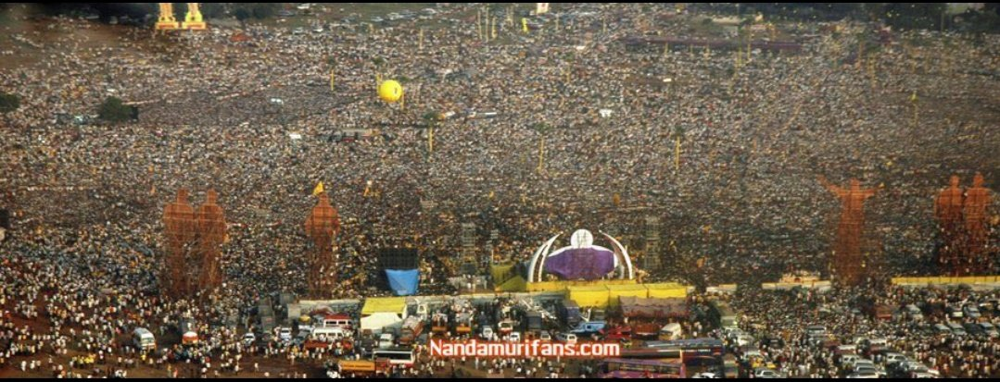
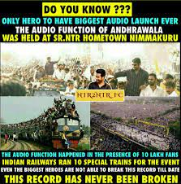

Born Nandamuri Taraka Rama Rao 20 May 1983 (age 40) Hyderabad, Andhra Pradesh (present-day Telangana), India Other names Tarak Occupation Actor Years active 1991, 1997 (child artist) 2001–present Works Full list Spouse Lakshmi Pranathi (m. 2011) Children 2 Parents Nandamuri Harikrishna (father) Shalini Bhaskar Rao (mother) Relatives N. T. Rama Rao (grandfather) Nandamuri Balakrishna (uncle) Nandamuri Kalyan Ram (half brother) Family See Nandamuri familyNandamuri Taraka Rama Rao Jr. (born 20 May 1983), also known as Jr. N.T.R. or Tarak, is an Indian actor who primarily works in Telugu cinema. One of the highest paid Telugu film actors,[1][2] Rama Rao has won several accolades, including two Filmfare Awards, two state Nandi Awards, and four CineMAA Awards. Since 2012, he has been featured in Forbes India's Celebrity 100 list.[3] Grandson of Telugu matinee idol, N. T. Rama Rao Sr. who was also the former Chief Minister of the Indian state of Andhra Pradesh,[4] Rama Rao appeared as a child actor in works such as Brahmarshi Viswamitra (1991), and Ramayanam (1997), the latter winning the National Film Award for Best Children's Film for that year. He made his debut as a lead actor with Ninnu Choodalani (2001). He rose to prominence with the coming-of-age film Student No. 1 (2001) and the action drama Aadi (2002). Rama Rao established himself as a leading actor in Telugu cinema with works such as Simhadri (2003), Yamadonga (2007), Adhurs (2010), Brindavanam (2010), Baadshah (2013), Temper (2015), Nannaku Prematho (2016), Janatha Garage (2016), Jai Lava Kusa (2017), Aravinda Sametha Veera Raghava (2018), and RRR (2022), the latter being his highest-grossing release. He won two Filmfare Awards for Best Actor – Telugu for his performances in Yamadonga and Nannaku Prematho. In 2017, he hosted the first season of the Telugu language reality TV show Bigg Boss on Star Maa. He started hosting the fifth season of Evaru Meelo Koteeswarulu in 2021 on Gemini TV. 2007–2012: Breakthrough and career fluctuations Rama Rao collaborated with director Rajamouli for the third time for a socio-fantasy film Yamadonga. For this film, he had to sport a new look by shedding more than 20 kg, as he used to be 94 kg. RamaRao played Raja, a thief who later criticizes and insults Yama and then suddenly goes into hell due to some bad acts. The film received positive reviews and made him receive Filmfare Award for Best Actor – Telugu. Actor Mohan Babu praised Rama Rao's performance in the film. Rama Rao later signed up for the action film Kantri which was directed by debutant Meher Ramesh, a protege of Puri Jagannadh. In 2009, Rama Rao took a year hiatus to campaign for Telugu Desam Party (TDP) in the 2009 general elections.[21][22] Rama Rao signed up for the action-comedy Adhurs, in which he played dual roles for the third time after Andhrawala, and Naa Alludu. Adhurs grossed more than ₹300 million.[23] He then returned to romantic films after several years in the romantic comedy Brindavanam (2011), directed by Vamsi Paidipally.[24] Rama Rao collaborated with director Ramesh for the fantasy action film Shakti, and with director Surender Reddy for the romantic action film Oosaravelli.[25] The Boyapati Srinu-directed Dammu (2012) become an average grosser.[26][27] 2013–present: Commercial successes and RRR Jr NTR with actor Rajendra Prasad at Nannaku Prematho promotional event In Baadshah, he sported a new look by straightening his curly hair.

The Audio function of Andhrawala was held at Sr. NTR's home town Nimmakur on 5th December 2003. Nimmakur which has a population of 2000 witnessed more than a few lakhs of people who thronged to see the latest superstar from Nandamuri dynasty. The crowds were uncontrollable. The tight security arrangements had gone haywire. Organizers who planned a grand gala event with song and dance shows by 6 heroines and musical troupe, cut short the entire show to a 30 minute program, which consisted of a speech each by NTR and Kodali Nani. Chakri perfomed a song. The entire show did not have any anchor, because all of them were stuck in the big traffic jam that ran to tens of kilometers from the Mecca of Nandamuri fans - Nimmakur to Gudiwada - Kodali Nani's aspiring political bastion. The capacity of the venue grounds was a mere 25000 and the crowds that turned up in lakhs were strangled on the roads from Pamarru to Nimmakur. The Nandamuri fans were frenzy and very eager to see their latest superstar NTR in flesh and blood. The crowds in the ground got unruly throughout the program. Around 100 frenzy fans - eager to get a close look of NTR - went onto the stage. Lots of photographers from local branches of Telugu and English newspapers were also on the stage. The crowds who were in the front could not get to see what was going on stage, as the people on stage blocked their view. The crowds then took out cheppals and stones and pelted on to the people on stage (which also included press photographers). A photographer who took the stage photos of this function described the stage venue as some kind of a battleground. Lack of organization and planning hit the function very badly. Even a few celebrities who graced this occasion appeared to have got intimidated by the crowds. The celebrities who showed up included D Suresh Babu, Paruchuri brothers, Murali Mohan, YVS Chowdary, VV Vinayak and Raja Mouli. However, the main invitee K Raghavendra Rao could not make it to the function. NTR unveiled the statues of his grand parents Sr. NTR and Smt. Basava Tarakam. He attended the audio function for half an hour (7:30 to 8 pm). It took him three hours to go back to Gudiwada from Nimmakur. He was back in Gudiwada by 11 PM. For the first time in the history of Telugu film journalism, the press returned back from a film event without covering it. This dismal failure happened because of the producer Giri who decided to bundle the press with the fans and made them travel in general compartment of Aadi express. If a special transportation was provided, press would have reported to the event on time. This event showcased the callous attitude of the producer towards media and news publishers. He did not even bother to followup up the press people and inquire about their situation.
NTR and his fans celebrated three events on 5th December 2003 1. Unveiling the statues of Sr.NTR and Smt. Basava Tarakam. 2. Audio function of forthcoming film Andhrawala 3. 150 days celebration of Simhadri. The main objectives of this function are... 1. Projecting Kodali Nani as the potential winner of forthcoming assembly elections provided a TDP ticket is given to him. 2. Generate more hype for Andhrawala film to make sure that it gets lion share of publicity compared to other films releasing at the same time. With this event, both these objectives were fulfilled to the fullest extent..